簡単な使い方
taskt の操作に慣れるために、簡単なスクリプトを作ってみましょう。
メモ帳を起動し、「こんにちは」と入力し、デスクトップ上に hello というファイルで保存します。
ここで紹介する手順をたどるのが面倒くさい方は hello.xml をダウンロードして、taskt で開いてみてください。
言わずもがなですが、事前に taskt をインストールしてください。
taskt を実行
taskt を実行すると、下のような画面が表示されます。この画面で早速スクリプトを作っていけます。

メモ帳を起動
左端の英語がたくさん並んでいるメニューから Programs/Process Commands をダブルクリックします。
すると、Run Custom Code や Start Process などの項目が出てきます。
次に、Start Process をダブルクリックします。
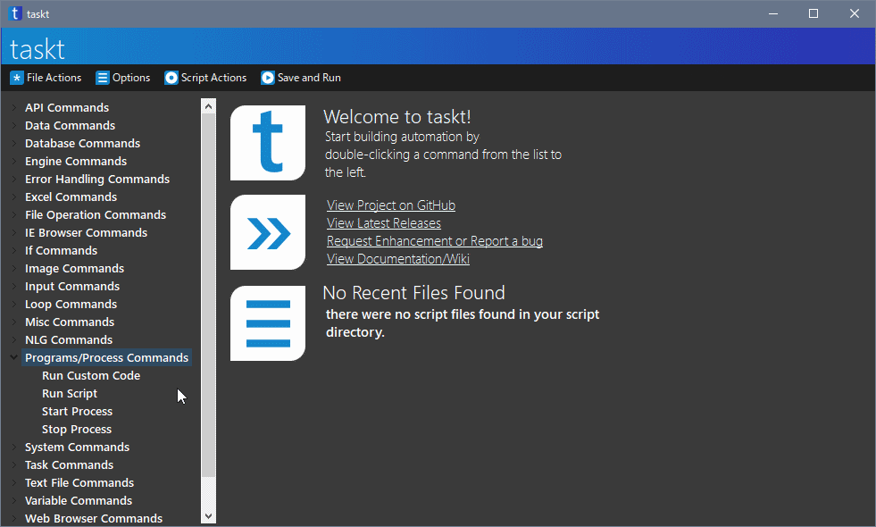
すると、下のような画面が表示されます。
Start Process とは、プログラム (ソフト) を実行するための命令です。
Please enter the name or path to the program (ex. notepad, calc) の下にある入力エリアに「notepad」と入力します。「notepad」は半角で入力してください。 また、「notepad」と入力したあと Enter キーは押さないでください。
Please enter any arguments (if applicable) と Wait for the process to complete? は空欄で良いです。
下の OK をクリックします。
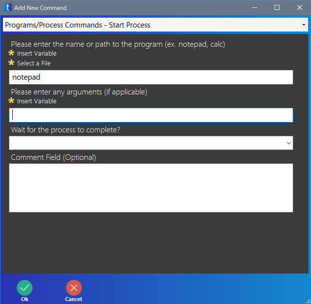
先ほどの画面が閉じられ、右側の領域に今作った Start Process の命令が表示されます。
こんな感じでどんどん命令を追加していきます。
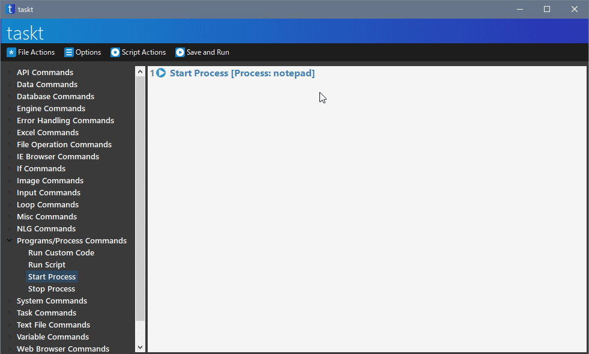
文字を入力する
メモ帳に「こんにちは」と入力します。
左端のメニューの中にある、Input Commands をダブルクリックします。
ここの項目には、キーボードでの入力や、マウス操作の命令があります。
その中にある、Send Keystrokes をダブルクリックします。
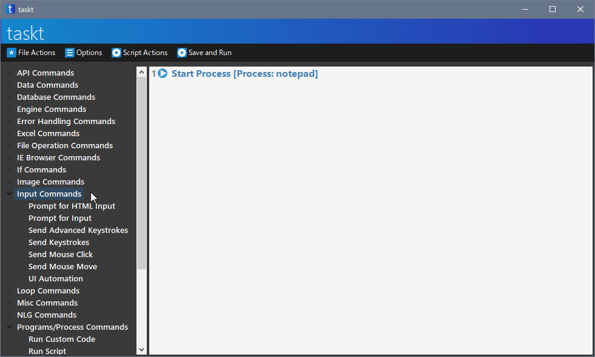
すると、下のような画面が表示されます。
Send Keystrokes はキーボードからの入力やショートカットキーを入力するための命令です。
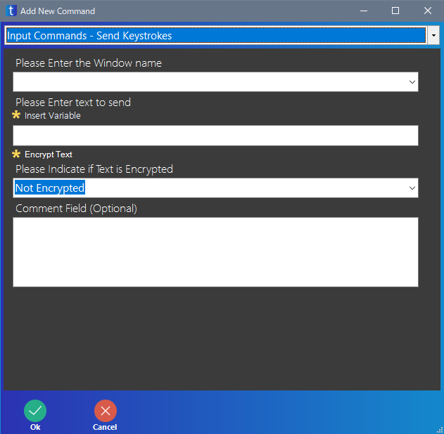
はじめに、キーを入力するプログラム (ソフト) を指定します。
Please Enter the Window name の下にある ▼ をクリックすると、いろいろと表示されるので「Current Window」を選択します。
Current Window とは、現在操作しているプログラムを指定するものです。
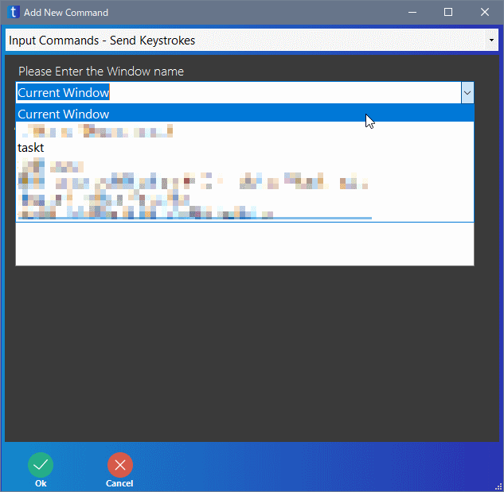
次に、入力内容を指定します。
Please Enter text to send の下の入力エリアに、「こんにちは」と入力します。
Please Indicate if Text is Encrypted は「Not Encrypted」のままで良いです。
その後、下の OK をクリックします。

ショートカットキーを入力し、ファイルを保存する
Ctrl キーを押しながら S キーを押すと、ファイルを保存するときの画面が表示されます。
メニューから「ファイル」→「上書き保存」とたどらなくても、一発で保存の画面が出せるので便利です。今回は、この機能を使ってファイルを保存します。
Send Keystrokes をダブルクリックします。
Please Enter the Window name は「Current Window」を選択します。
Please Enter text to send には「^s」と半角で入力します。
「^」はキーボードの上の「へ」のキーで入力できます。
詳しいことは説明しませんが、「^s」は Ctrl キーを押しながら S キーを押すという意味になります。
下の OK をクリックします。
デスクトップにファイル名を指定する
ファイルを保存する画面で、ファイルを保存する場所と、ファイル名を指定します。
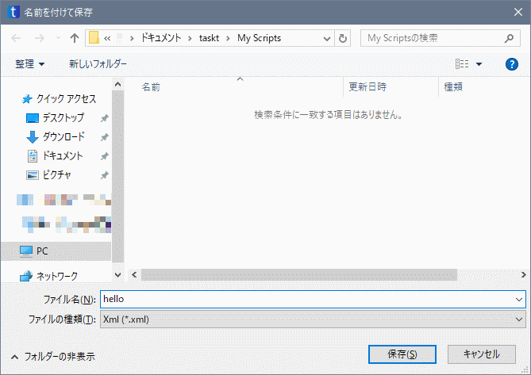
Send keystrokes をダブルクリックします。
Please Enter the Window name は「Current Window」を選択します。
次に、Please Enter text to send の下にある Insert Variable をクリックします。
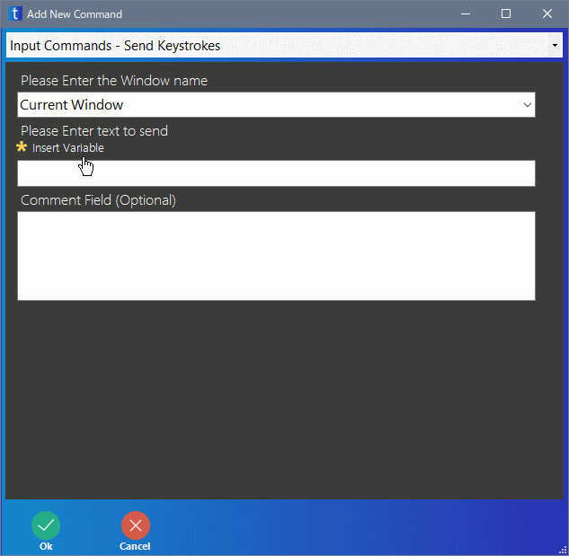
すると、別の画面が表示されます。この画面は、taskt が使える変数などの値を選ぶことのできる画面です。
Insert a variable from the list の下の一覧から「Folder.Desktop」を選択し、OK をクリックします。
Folder.Desktop とは、デスクトップの場所を意味する変数です。
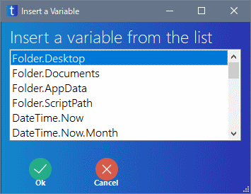
すると、Please Enter text to send に {Folder.Desktop} と入力されています。
その続きで「￥hello.txt」と半角で入力します。
「￥」を入力しても、下の画面のように勝手に \ になってしまいますが、気にしないでください。
入力したら、下の OK をクリックします。
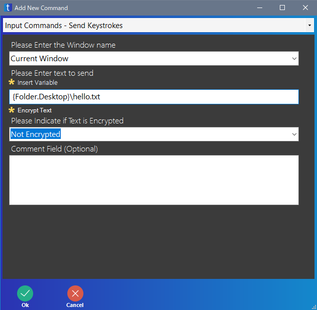
Enter キーを押して保存する
ファイルを保存する画面で、保存 ボタンを押さずに Enter キーを押しても保存できます。
Send Keystrokes をダブルクリックします。
Please Enter the Window name は「Current Window」を選択します。
次に、Please Enter text to send に「{ENTER}」と半角で入力します。
{ や } は、Shift キーを押しながら "「" や "」" で入力できます。
{ENTER} で Enter キーを押すという意味になります。
その後、下の OK をクリックします。
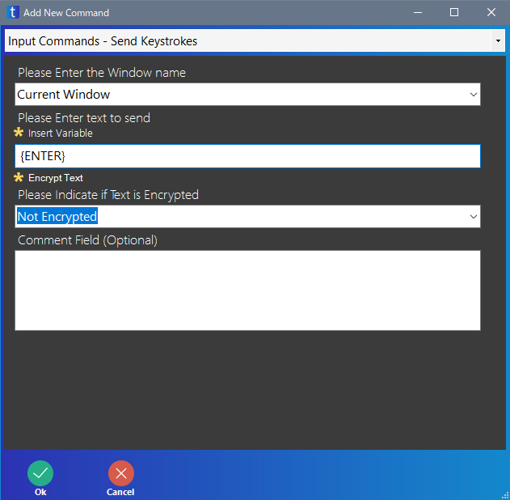
これでスクリプトは完成です。
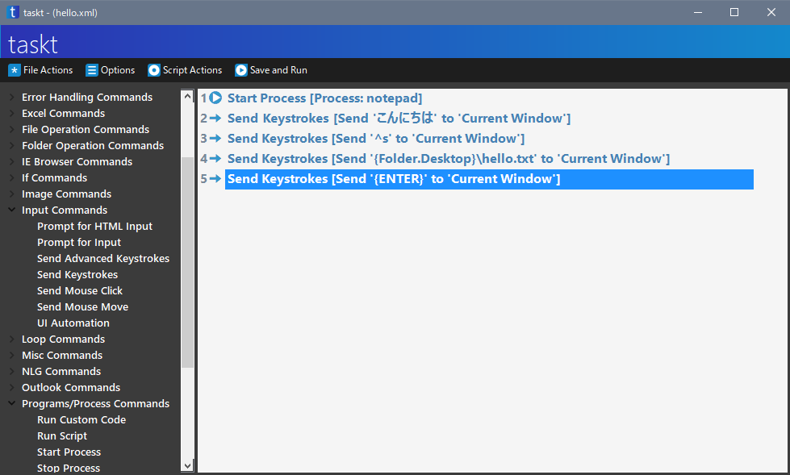
スクリプトを保存する
taskt の上のメニューから、File Actions をクリックし、Save をクリックします。
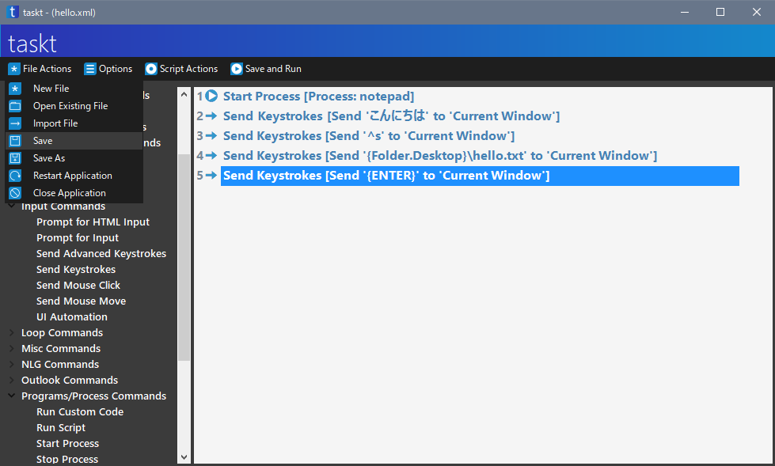
保存するスクリプトの名前は「hello」として、保存 をクリックします。
補足ですが、バージョン 3.2.0.0 の時点では Ctrl + S でスクリプトを保存することはできません。
スクリプトを実行する
実行してみましょう。実行する前に、デスクトップに hello というファイルがないことを確認してください。もし、hello というファイルが存在する場合、削除するか別の場所へ移動させてください。
上のメニューの Save and Run をクリックします。
- メモ帳が実行される
- 「こんにちは」と入力する
- Ctrl+S でファイルを保存する画面が表示される
- デスクトップに「hello.txt」というファイルで保存する
……という処理が実行されたと思います。
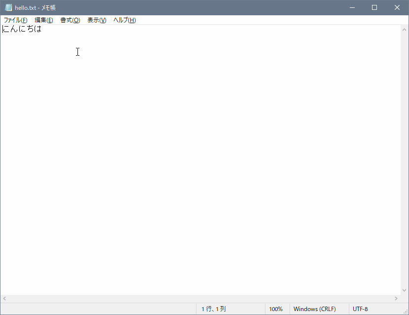
こんな感じで taskt ではスクリプトを作っていきます。
何となくわかってもらえたらうれしいです。